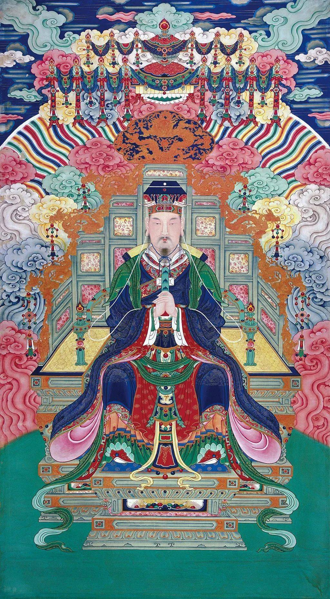
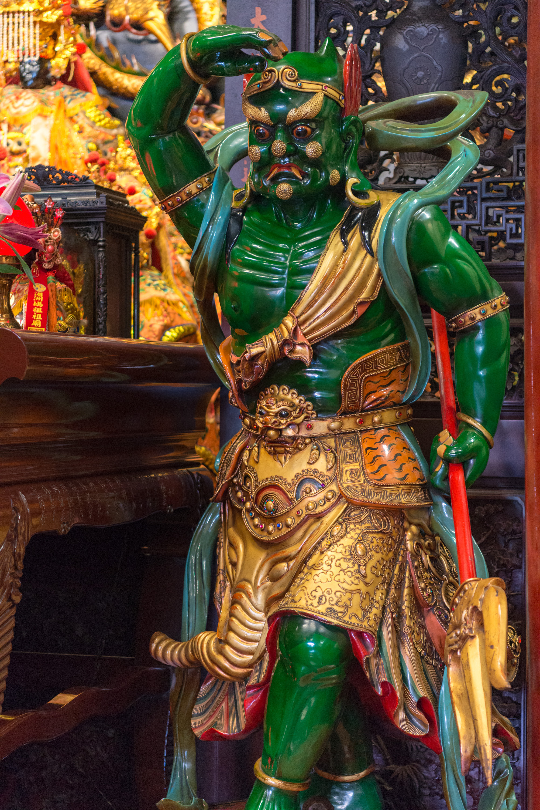
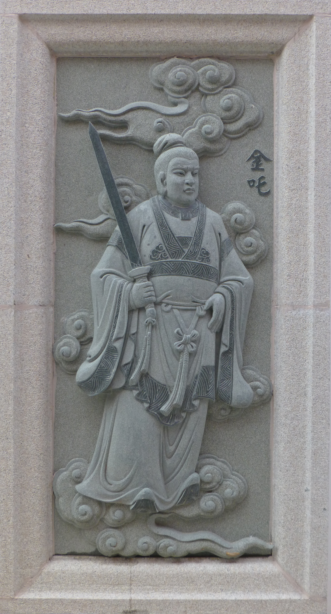
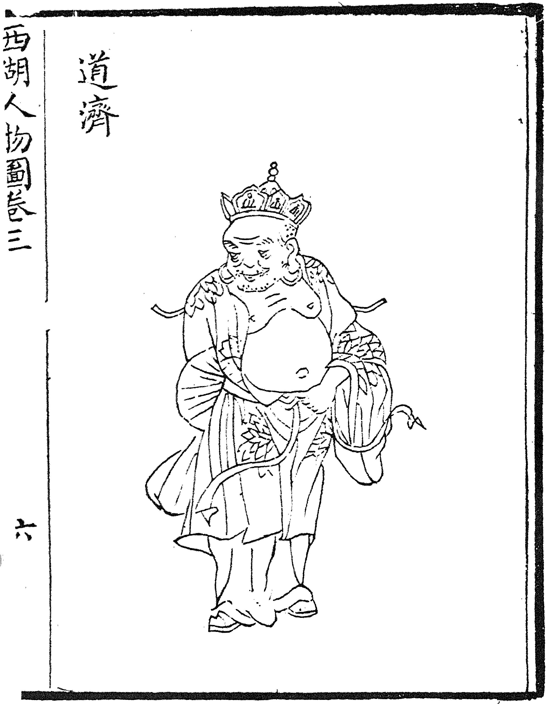
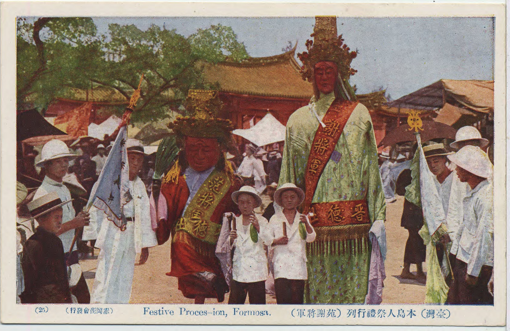

本宮 ・ 軟身聖母
建安宮設壇之初，與媽祖共同奠基的
兩位神尊，四十年來鎮守本宮、護佑萬民。
香火相承四十年，神尊陸續廣納，
以下為其中諸位神尊。

道教中之至高神，統御諸天諸神，職司天地人三界。
三官大帝之首，職司上元賜福，慈憫眾生、降福消災。
道家最高境界之神，本源至尊，本宮每年小年夜叩謝聖祖、恭祝萬壽。

地方守護神，鎮守土地、賜福添財，最為親近萬民。

天上聖母左將，目能觀千里，常隨護媽祖、巡視四方。
天上聖母右將，耳能聽千里，常隨護媽祖、報應四方。

李靖長子，封神演義中為文殊廣法天尊弟子，與兄弟並列護法神將。
李靖次子，封神演義中為普賢真人弟子，執吳鉤雙劍，列護法神將。

南宋高僧，以瘋癲率性、扶危濟困聞名，後世奉為神祇。
本宮所奉與濟公禪師同祀之護法神尊，慈悲濟世、行化人間。

奉旨陰陽兩界執行公務之護法將軍，捉拿惡鬼、維護正義。
本 ・ 宮 ・ 奉 ・ 祀
本宮共奉祀逾四十尊神尊，以上僅為其中諸位。
完整神尊名錄與典故介紹，將陸續更新於本頁。
歡迎信眾蒞臨本宮親身參拜